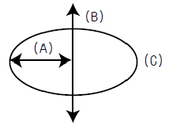
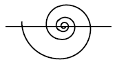
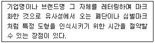

시각디자인산업기사 (2006-05-14 기출문제)
1과목: 색채학
1. 색과을 겹치면 겹칠수록 밝게 되는 색의 혼합은?
- 가산혼합
- 감산혼합
- 가감혼합
- 색료혼합
(정답률: 알수없음)

2. 다음은 먼셀의 기본 표색계이다. (A)에 맞는 요소는?

- White
- Hue
- Chroma
- Value
(정답률: 알수없음)
3. 안전색채나 안전 색광을 선택하는데 있어서 고려해야 할 사항으로 관련이 적은 것은?
- 색채로서 직감적인 연상을 일으킬 수 있어야 한다.
- 푸르킨예 현상을 고려해야 한다.
- 색의 쓰이는 의미가 적절해야 한다.
- 색채를 사용한 관습과는 관계가 없다.
(정답률: 알수없음)
4. 다른 색이론 중 옳은 것은?
- 영.헬름흘츠는 4원색설을 주장하였다.
- 추상체는 명암, 한상체는 색을 지각한다.
- 헤링은 3원색설을 주장하였다.
- 빛의 종류에 따라 물체색이 달리 보이나 흰 종이는 역시 희게 인지하는 것을 색의 항상성이라고 한다.
(정답률: 알수없음)
5. 먼셀(Munsell)표색계에서 색의 3속성 표기의 순서가 맞는 것은?
- VC/H
- HV/C
- HC/V
- CV/H
(정답률: 알수없음)
6. "한 번 분광된 빛은 다시 프리즘을 통과시켜도 그 이상 분광되지 않는다."이에 무엇에 대한 설명인가?
- 단색광
- 반사광
- 방사광
- 복합광
(정답률: 알수없음)
7. 색채조화에 관한 다음 설명 중 잘못된 것은?
- 색조가 강한 색 일수록 조화에 만감하므로 배색이 어렵다.
- 대비조화는 변화감을, 유사조화는 통일감을 가져온다.
- 명도, 채도가 비슷한 색끼리 배색할 경우 그 경계에 무채색의 분리 띠를 넣으면 애매한 관계가 없어진다.
- 색채조화는 주로 색상에 관계되고 명도, 채도는 크게 영향을 주지 않는다.
(정답률: 알수없음)
8. 오스트발트의 표색계에서 20ge라고 표기 됐을때 20은 무무엇을 의미하는가?
- 색상으로 2SG이다.
- 명도단계이다.
- 채도 단계이다.
- 색상은 10RP이다.
(정답률: 알수없음)
9. 다음 중 병치 가법 혼색과 관련이 없는 것은?
- 텔레비젼의 화상
- 인상파 화가의 점묘법
- 회전 혼색기의 2색 이상의 배색
- 중복되지 않은 망점의 옵셋 컬러 인쇄
(정답률: 알수없음)
10. KS(한국산업규격)의 색명 설명이 아닌 것은?
- 한국산업규격 KS-A-0011에 명시되어 있다.
- 색명은 계통색명만 사용한다.
- 기본색 이름은 빨강, 주황, 노랑, 연두, 초록, 청록, 파랑, 남색, 보라, 자주, 분홍, 갈색이다.
- 계통색명은 무채색과 유채색 이름으로 구분한다.
(정답률: 알수없음)
11. 다음 중 가장 짠 맛을 느끼게 하는 색은?
- 중간 회색
- 짙은 파랑색
- 옅은 빨강색
- 짙은 갈색
(정답률: 알수없음)
12. 다음 관용색명 중 옛날부터 사용해 온 고유색명에 해당하는 것은?
- 살색
- 살구색
- 하양
- 고동색
(정답률: 알수없음)
13. 오스트발트 조화론이 아닌 것은?
- 등백계열조화
- 등흑계열조화
- 등순계열조화
- 등반대계열조화
(정답률: 알수없음)
14. 두 색광을 혼합하여 백색광이 될 때 이 두 색의 관계는?
- 인근색
- 투과색
- 굴절
- 보색
(정답률: 알수없음)
15. 다음 중 동시대비에서 일어날 수 없는 현상은?
- 명도대비
- 계시대비
- 면적대비
- 연변대비
(정답률: 알수없음)
16. 오스트발트(Ostwald)의 조호론 중 등흑계열 조화에 해당 되는 것은?
- pa-ia-ca
- pa-pg-pn
- ca-ga-ge
- gc-lg-pl
(정답률: 알수없음)
17. 색채계획 시 고려해야 할 사항 중 옳은 것은?
- 낮은 명도의 색을 위쪽에, 높은 명도의 색상을 아래쪽에 칠하면 안정감이 있다.
- 무게감은 채도에서 많은 영향을 준다.
- 난색은 비교적 진출의 성향을 갖고, 한색은 후퇴의 성향을 갖는다.
- 침착의 느낌은 난색계의 채도가 높은 색에서 주로 느낀다.
(정답률: 알수없음)
18. 다음 일반적인 색채조절의 용도별 배색기준 중 가장 부적합한 것은?
- 천정 : 빛의 발산을 이용하여 반사율이 가장 높은 색을 이용한다.
- 벽 : 빛의 발산을 이용하는 것이 좋으니 천정보다 명도가 낮은 것이 좋다.
- 바닥 : 아주 밝게 하여 심리적 불안감을 해소시켜 주는 것이 가장 바람직하다.
- 걸레받이 : 방이 형태와 바닥면적의 스케칠감을 명료하게 하고 작업활동을 능률화하는 것으로 어두운 색채가 선택된다.
(정답률: 알수없음)
19. 방위와 그 상징 색채의 연결이 바른 것은?
- 동쪽 - 황색
- 서쪽 - 청색
- 남쪽 - 적색
- 북쪽 – 녹색
(정답률: 알수없음)
20. 다음과 같은 색채로 배색된 줄무늬 중 시인성(명시도)이 가장 높은 것은?
- 희색과 회색
- 노랑과 검정색
- 노랑과 파랑색
- 흰색과 파랑색
(정답률: 알수없음)
2과목: 인쇄 및 사진기법
21. 평판 인쇄의 일반적인 특징에 대한 설명 중 옳은 것은?
- 인쇄물 뒷면에 눌린 자국이 나타난다.
- 수분과 기름의 반발 작용을 이용한다.
- 인쇄된 화선이 볼록하게 솟아 올라 있으므로 눈으로 식별된다.
- 타 인쇄방식보다 인쇄된 잉크 막의 두께가 가장 두껍다.
(정답률: 알수없음)
22. 컬러필름 발색층의 3가지 색상은?
- Cyan, Magenta, Yellow
- Magenta, Green, Black
- Orange, Red, Yellow
- Cyan, Magenta, Blue
(정답률: 알수없음)
23. 버터, 마가린, 치즈 등의 포장 용지에 사용되고 있는 반투명의 바삭바삭한 소리가 나는 종이는?
- 황산지
- 모조지
- 금속지
- 라이스페이퍼
(정답률: 알수없음)
24. 현상 과정에서 정착제의 주된 역할을 설명한 것으로 옳은 것은?
- 할로겐화은을 금속은으로 바꾸어 준다.
- 빛에 노출되지 않은 할로겐화은을 제거해 준다.
- 현상 주약의 산화를 방지해 준다.
- 물자욱이 발생하는 것을 방지해 준다.
(정답률: 알수없음)
25. 일반적으로 잉크의 점도가 가장 낮은 것은?
- 플랙소용 잉크
- 잡지용지 인쇄용 잉크
- 블록판용 잉크
- 평판용 잉크
(정답률: 알수없음)
26. 건축 사진을 촬영하기에 적합한 설명이 아닌 것은?
- 건물과의 거리적인 조건을 만족시키기 위해 렌즈 교환방식 카메라가 편리하다.
- 왜곡을 수정하기 위해 무브먼트가 필요한 경우도 있다.
- 가장 표준적인 표준렌즈만 필요하다.
- PC 렌즈가 유용하게 사용될 수 있다.
(정답률: 알수없음)
27. 망사를 사용하여 제판하여 스퀴지(Squeegee)로 가압하면서 피인쇄체에 인쇄하는 방법은?
- 스크린 인쇄
- 오프셋 인쇄
- 그라비어 인쇄
- 플렉소 인쇄
(정답률: 알수없음)
28. 눈에 보이지 않는 잠상을 눈에 보이는 가시상으로 나타나게 하는 작업을 무엇이라 하는가?
- 정착
- 정지
- 수세
- 현상
(정답률: 알수없음)
29. 사진의 농도가 노출량과의 간계를 나타내는 특성곡선상에서도 나타나는 현상으로 감광 유제에 빛을 적정량 이상으로 쬐면 농도가 오히려 감소하는 현상은?
- 솔라리제이션(Solarization)현상
- 에버하르트(Eberhard)현상
- 근접(Edjacente)현상
- 로즈(Ross)현상
(정답률: 알수없음)
30. 속장을 실로 매거나 철사로 맨 다음 겉장만 양장 형식에 따라 제책한 방식은?
- 무선철 제첵
- 반양장 제책
- 중철 제책
- 재래식 제책
(정답률: 알수없음)
31. 볼록판 인쇄물의 특징으로 화선과 망점의 윤곽이 더욱 짙게 인쇄되는 현상을 무엇이라 하는가?
- 마지널 존 (marginal zone)
- 도트게인(dot gain)
- 슬러(slur)
- 미스팅(misting)
(정답률: 알수없음)
32. 빛은 그 파장의 차이에 따라 굴절률이 각각 다르다. 프리즘을 투과한 빛이 각각의 굴절각의 차이로 여러 가지 색으로 나누어지는 현상은?
- 분산
- 회절
- 편광
- 굴절
(정답률: 알수없음)
33. 주광용 필름의 색온도 범위로 가장 옳은 것은?
- 5,500~6,000K
- 2,500~3,000K
- 3,500~4,000K
- 7,500~9,000K
(정답률: 알수없음)
34. 렌즈 앞에 부착하여 자외선을 차단하는데 이용되는 필터는?
- 3색 분해 필터
- ND필터
- CC필터
- UV필터
(정답률: 알수없음)
35. 피사계 심도가 깊어지는 조건이 아닌 것은?
- 렌즈의 초점거리가 짧을수록
- 촬영거리가 멀수록
- 조리게 구멍이 작게 할수록
- 망원렌즈를 사용할수록
(정답률: 알수없음)
36. 인쇄기계의 3형식이 아닌 것은?
- 평압식 인쇄기
- 원압식 인쇄기
- 윤전식 인쇄기
- 직접식 인쇄기
(정답률: 알수없음)
37. 완성된 사진에서 불필요한 부분을 제거하는 작업은?
- 프레밍(Framing)
- 크로핑(Cropping)
- 트래핑(Trapping)
- 뷰잉(Viewing)
(정답률: 알수없음)
38. 인쇄방법 중 일반적으로 PS판과 블랭킷(Blanket)을 사용하여 간접 인쇄하는 방식은?
- 블록판 인쇄 방식
- 오프셋(off set)인쇄 방식
- 스크린 인쇄 방식
- 플렉소 인쇄 방식
(정답률: 알수없음)
39. 형광등 아래에서 컬러 사진을 촬영할 때 형광등의 녹색광을 제거하기 위한 필터는?
- PL필터
- SL필터
- FL필터
- CC필터
(정답률: 알수없음)
40. 컬러 필름에 관한 설명 중 틀린 것은?
- 컬러 리버설(color reversal)필름은 피사체 원래의 색과 반대되는 색으로 현상처리 해주며 인화할 목적으로 사용한다.
- 저감도(低感度) 필름은 인물사진이나 풍경사진 활영에 사용된다.
- 컬러 필름은 3가지의 발색층으로 구성되어 있다.
- 컬러 네거티브 필름은 주로 인화지에 인화할 목적으로 사용한다.
(정답률: 알수없음)
3과목: 시각디자인론
41. 1907~08년 파리에서생겨난 미술운동으로 피카소, 브라크 등이 자연과 인간을 기본적이고 기하학적인 단순한 형태로 환원시키려 한데서 시작된 디자인 사조는?
- 신인상파
- 입체주의
- 초현실주의
- 다다이즘
(정답률: 알수없음)
42. 척도의 종류가 아닌 것은?
- 현척
- 축척
- 배척
- 감척
(정답률: 알수없음)
43. 모든 조형 예술의 최초의 요소로, 그래픽의 원천적인 요소가 되는 것은?
- 선
- 면
- 점
- 형태
(정답률: 알수없음)
44. 일본에서 1957년 디자인 진흥을 위해 제정된 것은?
- 공업디자이너 협회
- 디자인학회 결성
- 아트디렉터 클럽설립
- G 마크 제도
(정답률: 알수없음)
45. 말레비치(K.Malevich), 리시츠키(E.Lissitzky)가 활약한 러시아의 산업미술에 기여한 사조의 특징은?
- 기하학적 형태의 활용
- 유기적형태의 활용
- 논리적 형태의 활용
- 현실적 형태의 활용
(정답률: 알수없음)
46. 모리스(Morris)가 수공예를 고집하는데 반해 근대 기계미술을 시인하면서 미래 지향적인 자세를 보여 주었으며, "선은 힘이다" 라고 주창한 벨기에의 신예술운동의 선구자는?
- 노만 게데스(N.Geddes)
- 반 데 벨테(H. Van de Velde)
- 올 브리히(J. M. Olbrich)
- 윌터 다윈 터그(W. Dorwin. Teague)
(정답률: 알수없음)
47. 다음 디자인의 영역에 대한 설명 중 적합한 것은?
- 시각디자인은 사용가치를 갖는 도구를 직접 만들어 내는 분야이다.
- 환경디자인은 인간환경을 바람직하게 구축하는 생활터전에 관한 분야이다.
- 제품디자인은 정보전달을 목적으로 시각적인 실체를 창조하는 분야이다.
- 운송기구, 건축 등은 제품디자인의 한 분야이다.
(정답률: 알수없음)
48. 다음 매체(Media) 중 설치매체에 해당되는 것은?
- POP
- DM
- NOVELTY
- TV
(정답률: 알수없음)
49. 다음 중 측선에 대한 설명으로 바른 것은?
- 축선은 투시 시점에서 실제 높이로 간주된다.
- 측선은 사룸의 점들에서 벗어나와 관찰자의 눈으로 다가가는 가상의 선들이다.
- 측선은 사물이 공간 속으로 사라지는 듯한 원금감으로 보는 사람에게 착시를 일으킨다.
- 측선과 화면이 교차하면 기선과 정점으로 투시되는 새로운 점이 형성된다.
(정답률: 알수없음)
50. 미적 형식원리로서 반복, 방사, 점이, 강조로 이끌어 낼 수 있는 것은?
- 조화
- 균형
- 리듬
- 비례
(정답률: 알수없음)
51. 다음 중 바우하우스에 대한 설명으로 옳지 않은 것은?
- 제1기 교육의 중심 인물인 이텐은 조형예비과정의 교육에 중점을 두었다.
- 그로피우스가 1919년 바이마르에 설립하였다.
- 유겐트스틸(Jugendstil)의 사상을 적극적으로 받아 들였다.
- 측선과 화면이 교차하면 기선과 정점으로 투시되는 새로운 점이 형성된다.
(정답률: 알수없음)
52. 근대 디자인에 영향을 끼친 디자인 운동과 관련된 나라의 연결이 잘못된 것은?
- 바우하우스(Bauhaus) - 독일
- 아르누보(Art Nouveau) - 이탈리아
- 구성주의(Constructivism) - 러시아
- 데 스틸(De Stijl) - 네덜란드
(정답률: 알수없음)
53. 다음 중 CIP의 목적과 거리가 가장 먼 것은?
- 기업의 개성과 자아의 동질성을 확립
- 사화문화 창조와 서비스 정신을 조성
- 소비자에게 신뢰를 보증하는 상징
- 소비자와 생산자 간에 친목을 도모
(정답률: 알수없음)
54. 작품 그 자체가 움직이거나 또는 움직이는 부분이 조립되어 있으며, 작품은 거의가 조각의 형태를 취하고 있는 것은?
- 콜로 타입 (Collo Type)
- 옵 아트 (op art)
- 그라비어 (gravure)
- 키네틱 아트 (kinetic art)
(정답률: 알수없음)
55. 루빈(Edger Rubin)에 의한 형(Figure)과 바탕(Ground)에 관한 설명 중 잘못된 것은?
- 형과 바탕이 동시에 공유하는 선을 윤관(Contour)이라 하며, 이윤곽은 바탕의 속성을 나타낸다.
- 두 개의 영역이 같은 외곽 선을 가지고 있을 때, 모양을 가진 것처럼 보이는 것이 형이며, 다른 하나는 바탕이다.
- 형의 색채는 바탕의 색채보다 견실하고 실질적으로 보인다.
- 관찰자가 형과 바탕을 같은 거리에서 보더라도 형은 가깝게 느껴지며, 바탕은 멀게 느껴진다.
(정답률: 알수없음)
56. 다음 그림에 대한 설명으로 옳은 것은?

- 등간격 나선
- 원의 신개선
- 아르키메대스 나선
- 인벌류트 곡선
(정답률: 알수없음)
57. 다음 중 기하학적 패턴의 상대적인 형태를 무엇이라고 하는가?
- 구성적 패턴
- 추상적 패턴
- 유기적 패턴
- 기호적 패턴
(정답률: 알수없음)
58. 디자인의 요소에 대한 설명 중 적절하지 않은 것은?
- 디자인의 요소 중 내용적 요소는 대상의 목적, 용도 기능, 의미 등이다.
- 디자인의 요소 중 형식적 요소는 형태, 색, 질감 등이다.
- 디자인의 요소 중 내용적 요소와 형식적 요소는 상호관련성이 없다.
- 디자인의 요소 중 시각 구성요소로 디자인의 핵심을 이루는 것은 형식적 요소라 할 수 있다.
(정답률: 알수없음)
59. 각 디자인사의 특징이 바르게 연결된 것은?
- 미술 공예 운동 : 산업혁명에 의한 대량생산에 대항하여 디자인과 수공예로의 복귀
- 아르누보 : 합리주의와 기계생산을 위한 디자인을 강조
- 독일 공작 연맹 : 발터 그로피우스의 건축 양식이 대표적임
- 바우하우스: 식물형태의 유기적 선을 많이 사용
(정답률: 알수없음)
60. 디자인 매니지먼트로서의 디자인 평가 기준에 속하지 않는 것은?
- 기능성
- 양식성
- 차별성
- 생산성
(정답률: 알수없음)
4과목: 시각디자인실무 이론
61. "소비자의 나이와 가족생활주기"는 다음의 소비자 행동에 미치는 영향 중 어디에 해당되는가?
- 심리적 요소
- 사회적 요소
- 문화적 요소
- 개인적 요소
(정답률: 알수없음)
62. 마케팅 믹스(Marketing mix)의 구성 요소인 4P에 해당되지 않은 것은?
- Product
- Price
- Promotion
- Problem
(정답률: 알수없음)
63. 포장 디자인의 활용으로 인한 이점이 아닌 것은?
- 다양한 욕구를 가진 소비자들의 제품 구매시 선택의 고민을 덜어주게 되었다.
- 단위화로 대량 생산을 가능케 하고 인건비를 절약할 수 있게 되었다.
- 제품의 유통이나 보관 과정에서 내용물을 보호한다.
- 상품의 얼굴일 뿐 아니라 기업 이미지의 확립을 위한 중요한 요소이다.
(정답률: 알수없음)
64. 다음 옥외광고에 관한 설명 중 잘못된 것은?
- 옥외에 표출되는 광고라는 뜻으로, 벽같이 고정된 곳의 매체를 이용하여 상품, 기업 등을 표시하는 광고이다.
- 불특정 다수를 대상으로 하여 옥외의 일정 공간에 일정기간 동안 게시하는 광고물의 총칭을 뜻한다.
- 옥외 광고는 옥상광고, 벽면광고, 돌출광고, 점두, 애드벌룬, 현수막 등이 있다.
- 특정 다수를 대상으로 하여 옥외의 공간에 무한적으로 시각적 자극을 주는 광고물의 총칭을 뜻한다.
(정답률: 알수없음)
65. 다음 중 소비자 행동 특성으로 옳은 것은?
- 비합리적으로 목표와 무관하게 행동한다.
- 모든 정보를 기억하며 타의에 의한 사고를 한다.
- 동기와 행동은 조사에 의해 예측할 수 없다.
- 행동은 학습될 수 있으므로 지속적인 교육이 필요하다.
(정답률: 알수없음)
66. 일러스트레이션 분야의 표현 양식에 의한 분류 중 추상적인 일러스트레이션의 분류가 아닌 것은?
- 기하학적 추상 일러스트레이션
- 유기적 추상 일러스트레이션
- 앙포르멜적 일러스트레이션
- 초현실적 일러스트레이션
(정답률: 알수없음)
67. 다음 중 인쇄제판에서 사용하는 스크린의 스크린 선수에 대한 설명으로 바른 것은?
- 스크린의 1cm폭 안에 들어가 있는 선이나 점의 수
- 스크린의 1인치 폭 안에 들어가 있는 선이나 점의 수
- 스크린의 1cm 정방형의 대각선에 있는 선이나 점의 수
- 스크린의 1pt 폭 안에 들어가 있는 선이나 점의 수
(정답률: 알수없음)
68. 잡지광고 디자인에서 블리드(Bleed)란?
- 한 쪽 전면에 광고를 게재하지 않고 그 절반, 혹은 1/4만 게재한 것
- 1/2이나 1/4쪽이 세로로 접히게 광고를 게재하는 것
- 편친 쪽 광고, 즉 두 페이지에 걸쳐 광고를 게재하는 것
- 광고물의 마무리 크기보다도약간 크게 인쇄하여 마무리 크기로 잘라내 페이지에 가득차게 인쇄하는 것
(정답률: 알수없음)
69. 광고주가 스폰서롤 참여하면서 그 프로그램 속에 광고메세지를 삽입하는 광고는?
- 스파트 광고
- 프로그램 광고
- 로컬 광고
- 블록 광고
(정답률: 알수없음)
70. 시장 세분화(Market segmentation)를 통해 얻을 수 있는 기업의 이점이 아닌 것은?
- 소비자 욕구, 구매동기 등을 정확히 파악할 수 있다.
- 기업의 강점과 약점을 평가하여 유리한 시장을 선택할 수 있다.
- 마케팅 자원을 효율적으로 분배할 수 있다.
- 다양한 소비자들을 공략할 수 있다.
(정답률: 알수없음)
71. 심벌의 색채 결정 방법으로 적절치 못한 것은?
- 심벌의 특징을 강화하는 색
- 기업 이념이나 목표를 표현하는 색
- 경쟁 기업과 유사한 색
- 응용요소의 특성을 고려한 색
(정답률: 알수없음)
72. 상품이나 기업에 관한 인식을 어떠한 형태로 소비자들의 마음에 자리 잡도록 할 것인지를 결정하는 것을 무엇이라고 하는가?
- Planning
- Positioning
- Presentation
- Promotion
(정답률: 알수없음)
73. 광고는 여러 가지 커뮤니케이션의 형태 중 어디에 속하는가?
- 매스커뮤니케이션
- 개체 내 커뮤니케이션
- 개인 대 개인 커뮤니케이션
- 그룹 대 그룹 커뮤니케이션
(정답률: 알수없음)
74. 다음 TV광고에 관한 설명 중 잘못된 것은?
- 우리나라 최초의 TV 광고는 영창악기의 유니버셜 레코드 광고이다.
- 우리나라 1956년 5월12일 처음으로 민간상업 TV 방송국이 발족되었다.
- 광고의 반복효과를 제고시키는 점에서 TV는 크게 이용되고 있다.
- 네트워크 광고는 지역 방송국에 제한되어 방송되는 광고로, 소배상들의 지역 광고주가 이용한다.
(정답률: 알수없음)
75. 시각전달을 위한 표현수단으로서 동물이나 상품을 의인화 하거나 이질적 이미지의 결합에 의한 비합리적 표현으로 기발한 유머를 만들어내는 표현수단은?
- Thumbnail Sketch
- Visual Scandal
- Idea Sketch
- Visual Identity
(정답률: 알수없음)
76. 일반적으로 광고가 다수 대중에게 주지시켜 욕망을 환기시키는 것이라면, 디스프레이의 일종으로 직접구매의 상승적 효과를 크게 하는 광고수단은?
- 쿠폰광고
- DM광고
- 이벤트
- POP광고
(정답률: 알수없음)
77. 신제품 개발은 매우 중요하며, 특히 오늘날은 신제품 개발과 기업의 생존이 직결되어 있다고 할 수 있다. 기업 경영차원에서 신제품 개발의 목적이 될 수 없는 것은?
- 소비자와의 친밀한 관계 유지
- 신제품을 수익원으로 한 기업 이윤의 확보
- 기술적 낙후 방지와 기술적 자산의 유지
- 기업의 성장, 장래보장
(정답률: 알수없음)
78. 다음 중 아래의 설명에 해당하는 용어는?

- brand mark
- corporate mark
- word mark
- trade mark
(정답률: 알수없음)
79. 미래에 각광 받을수 있는 옥외광고의 일종으로 프로모션, 이벤트 등과 접목하여 버스의 외관, 지하철역사 등 큰 광고 면적에 적용하여 다양한 전략이 가능한 광고 기법은?
- 와이드 컬러 (Wide color) 광고
- 빌보드(Bill Board) 광고
- 애드벌룬(Adballoon) 광고
- 랩핑(Wrapping) 광고
(정답률: 알수없음)
80. 신문 광고의 구성요소인 조형적 요소와 내용적 요소 중 내용적 요소에 해당하는 것은?
- 일러스트레이션(illustration), 보더라인(borderline)
- 트레이드마크(trade mark), 브랜드(brand)
- 헤드라인(headline), 캡션(caption)
- 코퍼레이트 심볼(corporate symbol), 로고타입(logotype)
(정답률: 알수없음)